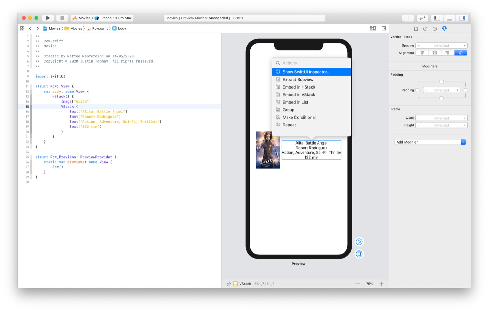

В наше время информационные технологии развиваются особенно интенсивно. Компьютеры становятся значительно производительнее и для них требуется современное программное обеспечение для обработки и хранения информации.
Ни одно современное предприятие не обойдется без компьютера и компьютерных технологий. Высокая продуктивность, товар лучшего качества, доскональный результат работы – все это благодаря компьютерной автоматизации.
Как уже было ранее описано, языки программирования делятся на высокие и низкие. Низкие языки программирования практически вышли из обихода, однако до сих пор используются в узкоспециализированных задачах, где без ассемблера – никуда. Ядра операционных систем, драйверы для оборудования, интерпретаторы и компиляторы, прошивки BIOS – все это про ассемблер. Высоких языков программирования же в разы больше, чем несколько диалектов ассемблера.
К ним, например, относится C, написанный еще в начале 70-х годов прошлого века, однако он широко используется и по сей день. Например, он изучается во многих вузах. Не всегда он дается легко, т.к. он тяжелый для первоначального погружения в мир программирования и далеко не каждый студент его освоит быстро. C является языком программирования, сперва разработанный для развивающихся операционных систем Unix. Это хороший язык, но в данный момент он считается устаревшим, т.к. в нем отсутствуют полезные привычные конструкции.
Также, к популярным современным языкам программирования высокого уровня можно отнести этот большой список:
| JavaScript | C# | Java |
| Python | PHP | TypeScript |
| Kotlin | Swift | C++ |
| Go | Ruby | Dart |
| 1C | Rust | Objective-C |
Все они прекрасно подходят для своих задач. Вот некоторые примеры из этих языков программирования:
1989 год
Гвидо Россум
Python хорош тем, что его синтаксис позволяет читать его как обычный текст на
английском языке. Это позволяет использовать его в образовательных целях. Тем не менее, этот язык дает и
достаточную базу для профи – этот язык широко используется для бекенд разработки. Для него написана целая
куча библиотек и фреймворков, позволяющих делать это максимально удобно и продуктивно. Он используется
Google, Spotify, Netflix, reddit и т.д.
1995 год
Брендан Эйх
JavaScript не заменим для работы веб-сайтов. Почти все сайты в интернете
используют JavaScript для правильной работы в браузере. Он нужен для различных анимаций, генерации страницы,
всплывающих сообщений, уведомления и т.д. Есть более современный аналог – TypeScript, но он менее популярен
в массах.
2011 год
JetBrains
Kotlin – современная замена некогда мастхев языку программирования для
мобильных
устройств на операционной системе Android – java. Это разработка компании JetBrains, созданной российскими
программистами. Этот язык сохраняет свою совместимость с Java, но упрощает работу программистам. Код
компилируется быстрее, инструментов для разработки больше. В настоящий момент этот язык программирования
является стандартным для разработки приложений на Android, он включен Google в среду разработки Android
Studio начиная с третьей версии.
2011 год
JetBrains
Swift – один из самых свежих языков программирования на сегодняшний день, он
появился в конце 2014-го года и с тех пор набрал широкую популярность. Он служит основным языком
программирования для разработки приложений сразу на нескольких платформах, будь то настольный компьютер,
телефон, планшет, умные часы или даже телевизор. В нем встроен мощный фреймворк SwiftUI, который в паре с
фирменной средой программирования Xcode позволяет программировать GUI приложения необычайно просто, как
будто программист работает не с программным кодом, а использует конструктор приложений.

Синтаксис языка программирования Swift и пример работы Xcode
В частности, этот язык программирования доступен для macOS, iOS, iPadOS, watchOS, tvOS и других Darwin базированных операционных системах.
Илья Глинских
2 ноября 2022
Главная страница
Бесполезная информация
Наглядная демонстрация решения задач
Я старался
Определение программной инженерии
Низкие и высокие языки программирования
История возникновения программной инженерии и программирования
Ключевые даты и личности
Рейтинг самых популярных языков программирования по мнению Habr
Информация в графиках